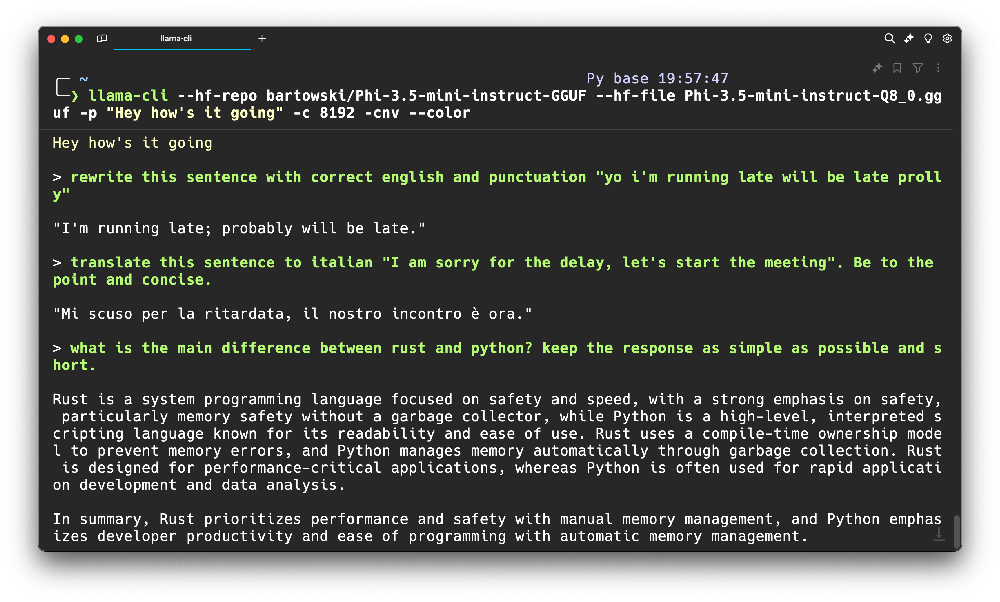

I’m a strong believer that as we continue to traverse the AI/ ASI/ AGI landscape, the net compute required for accessing it would decrease i.e. we’ll get smaller but stronger models.
As these models continue to become smaller and stronger, it’s more likely that you can run inference directly on your device and replace your on-line/ API based LLM usage (like ChatGPT, Gemini, Claude, etc). Hence, I continue to keep an eye out for smaller models.
The big question here, is what use-cases do you actually use these on-device models for?
I use them for a few select task, like, rewriting, summarizing, quick syntax lookups, or just quick vibe checks on a topic (asking the model to critique what I’ve written) and creative explorations.

This brings us to Phi 3.5. The other day, Microsoft released an update to their Phi series of small scale LLMs: Phi 3.5.
The highlight: Phi 3.5 mini, MoE and vision with 128K context, multilingual & MIT license! 🔥
The MoE beats Gemini flash and the Vision model is competitive with GPT4o.
Some quick notes on the models and they atleast look good on benchmarks:
- Beats Llama3.1 8B and Mistral 7B and competitive with Mistral NeMo 12B
- Multilingual model and Tokenizer with 32K vocab
- Trained on 3.4T tokens
- Used 512 H100s to train (10 days)
MoE with 16x3.8B (6.6B active - 2 experts)
- Beats Gemini flash
- 128K context, Multilingual and same tokenizer (32K vocab)
- Trained on 4.9T tokens -Used 512H100s to train (23 days)
- Beats GPT4o on averaged benchmarks
- Trained on 500B tokens
- Used 256 A100 to train (6 days) -Specialised in TextVQA + ScienceVQA
The star of the show for me atleast is the Phi-3.5 Mini, it looks like decently sized model which would make it easy to fine-tune for specific tasks.
Alright, enough of about the models, let’s try to see if we can run this model on your Mac/Windows/Linux device.
There are multiple ways to run a model on-device - you can use, transformers, llama.cpp, MLC, ONNXRuntime and bunch others. One of the easiest ways however is to use llama.cpp, once setup - it just works across pretty much all well-known model architectures.
Step 1: Setup llama.cpp
On a mac, you can install llama.cpp using homebrew:
brew install llama.cppOn a Windows/ Linux device, you can follow the instructions on the llama.cpp Docs)
For example, a typical build command for CUDA enabled device looks like this:
git clone https://github.com/ggerganov/llama.cpp && \
cd llama.cpp && \
make GGML_CUDA=1 LLAMA_CURL=1There are plenty other permutations and combinations so feel free to look at those on the linked docs above.
Step 2: Run inference with Phi3.5
To be able to run a LLM on-device all you need is to find the model on the hub and simply point the llama.cpp’s built binaries to it. There are over 30,000 quantized llama.cpp models on the Hub. For our use-case we’ll use the lmstudio-community/Phi-3.5-mini-instruct-GGUF repo by the good folks at lm-studio.
llama-cli --hf-repo lmstudio-community/Phi-3.5-mini-instruct-GGUF \
--hf-file Phi-3.5-mini-instruct-Q6_K.gguf \
-p "The meaning to life and the universe is" -c 8192Step 3: Use it for your own tasks
That’s the fun bit, once the model is loaded, you can do whatever you want, at the touch of your terminal.
Go on and try out some of your own prompts, and see how it works. There’s myriads of options you can use whilst playing with the model, check out the llama.cpp docs for more details.
Here’s some of the options I use quite a bit:
llama-cli --hf-repo bartowski/Phi-3.5-mini-instruct-GGUF \
--hf-file Phi-3.5-mini-instruct-Q8_0.gguf \
-p "Hey my name is Sof, what are you upto?" -c 8192 -cnv --color-c is the context window size, -cnv is to use the conversation/ chat mode and --color is to colorize the output.
Bonus: Now go try other GGUF models on the Hub and compare their performance with Phi 3.5.
and.. that’s it!